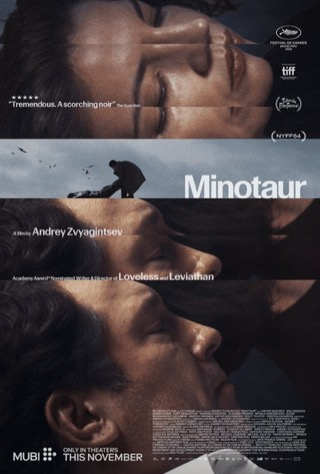

Minotaure
From the festival
The year is 2022 and the backdrop is Putin’s corruption-drenched Russia in LEVIATHAN Oscar-nominee Andrey Zvyagintsev’s latest, his first feature in a decade after 2017’s astounding LOVELESS. A bone-chilling reimagining of both Claude Chabrol’s LA FEMME INFIDELE and Adrian Lyne’s UNFAITHFUL, Zvyagintsev’s own thriller follows the essentials of the source material: amid various work pressures, a powerful businessman (Dmitriy Mazurov) learns that his increasingly distant wife (Iris Lebedeva) is cheating on him. But the filmmaker also puts a masterfully nihilistic spin on the story’s machinations, wondering, with his ingenious inquisitiveness and observantly still camerawork, if any authority in his motherland would care about unspeakable acts of crime when the country is at war with Ukraine, and a sense of lawlessness has seized the higher-ups. The winner of the Grand Prix prize at the 2026 Cannes Film Festival, MINOTAUR gifts us a parting note that feels like a silent scream with echoes that inhabit the soul. -- Tomris Laffly
- Directed by
- Andrey Zviaguintsev
- Country
- France / Latvia / Germany
- Year
- 2026
- Running time
- 140 minutes
- Language
- Russian
- Premiere
- California Premiere
- With
- Dmitriy Mazurov, Iris Lebedeva
Source: Festival website programme (MVFF49): Wayback Machine copy; Festival film page: Wayback Machine copy; Poster from Filmweb